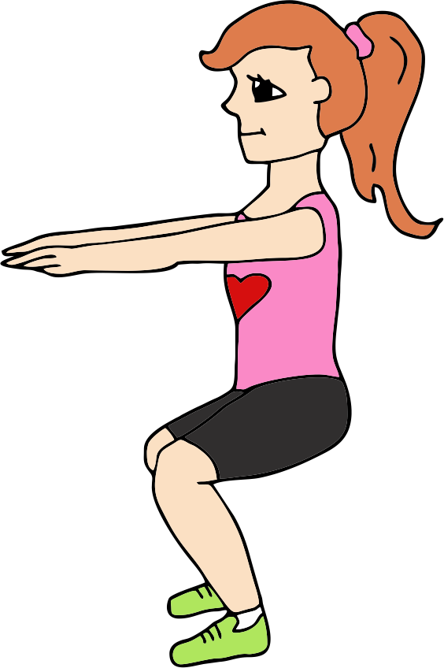
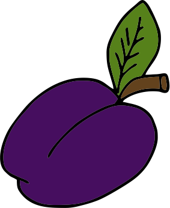
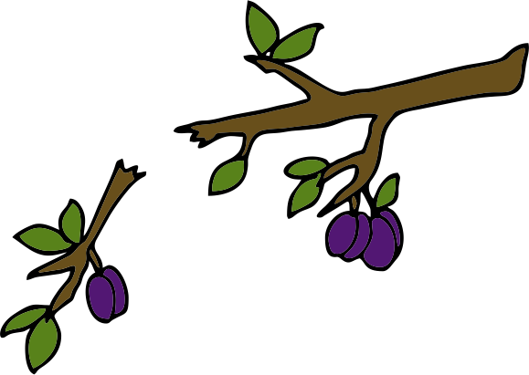

1. Mis on korduslaused ja milleks neid kasutatakse?
2. Milliseid korduslauseid on olemas?
3. Kuidas kirjutada while-tsüklit?
4. Kuidas kasutada break-käsku tsükli peatamiseks?
Mis on korduslaused ja milleks neid kasutatakse?
Juba algoritmide peatükis märkasime, et vahepeal võib meil vaja minna korduseid. Näiteks söögi maitsestamisel
tahame lisada maitseaineid ja siis toitu maitsta. Kui toit on veel mage, siis lisame veel maitseaineid ja maitseme uuesti.
Niimoodi teeme kuni oleme toidu maitsega rahul. Või näiteks trenni tehes teeme kindla korduste arvu mingit harjutust. Näiteks
20 kätekõverdust ja 40 kükki. Selles peatükis õpime, kuidas korduseid koodis kirja panna.
Oletame, et tahame kirjutada programmi, mis väljastaks kasutajale 20 korda "Tee üks kätekõverdus!". Kuidas seda kirja paneksime?
Üks variant on muidugi lihtsalt 20 print-käsku kirjutada.
Ilmselt taipad, et niimoodi korduseid kirja panna on väga tülikas. Ja pealegi, mis saaks siis, kui tahaksime kasutajalt küsida, mitu
kätekõverdust ta teha tahab? Siis me ei saa ju ette teada, mitu print-käsku koodi kirjutada? Siin tulevadki appi korduslaused.
Korduslause või teisisõnu tsükkel on konstruktsioon, mida
programmeerimises kasutatakse korduste kirjutamiseks.
Milliseid korduslauseid on olemas?
Kaks põhilist korduslause tüüpi on while ja for.
Selles peatükis keskendume while-tsüklile, mis on oma olemuselt sarnane tingimuslausetele.
For-tsükkel on kasulik failide ja andmestruktuuride läbimiseks ja just failide teemas tutvumegi sellega põhjalikumalt.
Kuidas kirjutada while-tsüklit?
While-tsüklis on kõigepealt võtmesõna
while, millele järgneb tingimus ja siis koolon. Tingimuste koostamist õppisime juba eelmises peatükis.
Tsükli sisu ehk kõik need käsud, mida tahame täita kuni tingimus on tõene, kirjutatakse järgmiselt realt taandega. Seega näeb see konstruktsioon välja
väga sarnane tingimuslausele, ainult võtmesõna if on asendunud võtmesõnaga while.
Aga oluline erinevus on see, et kui tingimuslausel täideti tingimuslause sisu ainult üks kord, siis tsükli puhul täidetakse seda nii kaua, kuni tingimus on tõene.
Pärast igat tsükli sisu täitmist ehk iteratsiooni minnakse uuesti tingimust kontrollima ja kui see on ikka veel tõene, siis
täidetakse tsükli sisu uuesti. Tsükli puhul on oluline, et mingil hetkel jõuaks kätte olukord, kus tsükli tingimus enam pole tõene ja saame tsüklist väljuda, muidu
programm jääbki lõpmatusse tsüklisse. Seega tuleks tsükli tingimuses olevaid muutujaid tsükli sees muuta.
Proovime nüüd kirja panna kätekõverduste koodi nii, et tsüklis väljastataks 20 korda "Tee üks kätekõverdus!". Selleks loome kõigepealt
tsüklimuutuja tehtud_kätekõverdusi, mis hoiab endas juba tehtud kätekõverduste arvu.
Tsükli tingimuseks saame siis panna, et täidame tsüklit seni, kuni tehtud kätekõverduste arv on väiksem kui 20, ja tsükli sees pärast iga iteratsiooni suurendame
seda arvu ühe võrra.
Kuidas muutuja väärtust suurendada või vähendada?
Eelmises koodijupid kasutasime muutuja tehtud_kätekõverdusi väärtuse muutmiseks järgmist koodijuppi:
tehtud_kätekõverdusi = tehtud_kätekõverdusi + 1
Siin teeb Python kõigepealt ära tehte tehtud_kätekõverdusi + 1 ning seejärel omistab saadud
väärtuse muutujasse tehtud_kätekõverdusi. Niimoodi saame hõlpsalt muutuja väärtust suurendada mingi arvu võrra.
Sarnaselt saame ka teha kõiki teisi tehteid. Näiteks lahutada muutujast mõne arvu või korrutada muutujat mingi arvuga ja siis omistada saadud
tulemus tagasi muutujasse. Sellist muutuja väärtuse muutmist kasutatakse üsna palju ja nendest tehetest on välja mõeldud ka lühemad variandid.
Eelmise koodijupiga täpselt sama asja teeb ka järgmine lühendatud variant:
tehtud_kätekõverdusi += 1
Lühendatud variandis on kõigepealt muutuja, mida tahetakse suurendada või vähendada. Sellele järgneb kokkupandult tehtemärk ja omistamise märk. Viimasena on
konstant või muutuja, millega tehet sooritatakse (ehk tehte teine pool). Allolevas
tabelis on toodud tüüpilisemate tehete nii pikad kui lühendatud variandid.
Muutuja väärtuse suurendamine/vähendamine
Lühendatud variant
i väärtus enne
i väärtus pärast
i = i + 1
i += 1
3
4
i = i - 1
i -= 1
3
2
i = i * 2
i *= 2
4
8
i = i / 2
i /= 2
5
2.5
i = i % 2
i %= 2
5
1
i = i ** 2
i **= 2
4
16
i = i // 2
i //= 2
5
2
Trenn
Proovi kätekõverduste programm niimoodi ümber teha, et kätekõverduste arv küsitaks hoopis kasutajalt. Programm võiks töötada nii:
Sisesta kätekõverduste arv: 4 Tee üks kätekõverdus! Tee üks kätekõverdus! Tee üks kätekõverdus! Tee üks kätekõverdus!
Sisesta kätekõverduste arv: 6 Tee üks kätekõverdus! Tee üks kätekõverdus! Tee üks kätekõverdus! Tee üks kätekõverdus! Tee üks kätekõverdus! Tee üks kätekõverdus!
Soovi korral võid programmi veel mõne harjutuse lisada. Näiteks küsida lisaks kätekõverduste arvule ka kükkide arvu.
Sisesta kätekõverduste arv: 2 Tee üks kätekõverdus! Tee üks kätekõverdus! Sisesta kükkide arv: 5 Tee üks kükk! Tee üks kükk! Tee üks kükk! Tee üks kükk! Tee üks kükk!

Tsükli tingimuses võib kasutada igasuguseid tõeväärtustehteid. Järgmiseks vaatame ühte näidet, kus kasutajal palutakse salajane sõna ära
arvata. Siin on tsükli jätkamise tingimuseks see, et kasutaja pakutud sõna ei ole võrdne meie salajase sõnaga. Kui kasutaja pakub õige sõna, siis
tsükli tingimus muutub vääraks ja tsükli täitmine lõpetatakse. Tsükli sees peame küsima kasutajalt uut pakkumist.

Üks näide selle koodi võimalikust väljundist:
Mis on sügisel valmiv lilla puuvili? õun See ei ole õige. Paku uuesti: pirn See ei ole õige. Paku uuesti: kirss See ei ole õige. Paku uuesti: ploom Tubli! Arvasid õigesti!
Lõpmatud tsüklid
Mis saaks, kui jätaksime tsükli sisus tsüklimuutuja väärtuse muutmata? Näiteks kui kätekõverduste programmis jätaksime tehtud kätekõverduste
arvu suurendamata või sõna arvamise mängus kasutajalt uue pakkumise küsimata?
Võid proovida seda koodijuppi Thonnys käivitada ja ilmselt näed, et programm jääbki aina väljastama "Tee üks kätekõverdus!". Sellist
tsüklit nimetatakse lõpmatuks, sest tsükli tingimus on alati tõene. Tsüklimuutujale tehtud_kätekõverdusi antakse
enne tsüklit väärtus 0 ning seda väärtust ei muudeta. Seega esimesel iteratsioonil on tingimus 0 < 20 tõene. Väljastatakse "Tee üks kätekõverdus!"
ja siis minnakse uuesti tsüklitingimust kontrollima. Kuna me ei muutnud tehtud_kätekõverdusi väärtust, siis on tingimus
ikka 0 < 20 ja see on ikka tõene.
Thonnys saad siiski programmi peatada punasest STOP-nupust.
Peatamise käsk on leitav ka Käivita menüüst Peata/taaskäivita interpretaator.
Kõige lihtsam viis lõpmatut tsüklit moodustada on kasutada tõeväärtustehte asemel tingimuses otse tõeväärtust True. Kuid kas sellist tsüklit
on üldse mõtet kirjutada? Tegelikult on Pythonis olemas ka käsk, millega saab tsükli sees tsüklit lõpetada. Seega on meil võimalik ka alati tõese
jätkamistingimusega tsükkel peatada.
Lisavõimalus tsükli peatamiseks: käsk break
Tsükli peatamiseks on loodud käsk break. See tähendab inglise keeles
murra ja just seda see käsk teeb – murrab tsükli. Seda käsku kasutatakse tsükli sisus ja selle täitmisel peatatakse tsükli töö ja minnakse
edasi ülejäänud programmiga. Tavaliselt kasutatakse seda mõnes tingimuslauses tsükli sees.
Proovime näiteks sõna arvamise mängu kirjutada ümber kasutades lõpmatut tsüklit ja break-käsku.

Mõlemad koodijupid töötavad ühtemoodi ja nende käivitamisel on tulemus sama, kuid esimeses näites lõpetatakse tsükkel, kui tsüklitingimus on väär, ja
teises näites siis, kui tsükli sisus tingimuslause on tõene ja jõuame break-käsuni.
Harjutused
Arvu arvamine
Kirjuta programm, mis laseks kasutajal arvata salajast arvu vahemikus 1-100. Selle salajase arvu võid ise valida. Iga kasutaja pakkumise
peale peaks programm ütlema, kas salajane arv on pakutud arvust suurem või väiksem. Kui kasutaja pakutud arv on võrdne salajase arvuga,
siis programm ütleb kasutajale, et ta leidis õige arvu, ja lõpetab oma töö.
Mõni näide programmi tööst, kui salajane arv on 17:
Paku arvu vahemikus 1-100: 7 Salajane arv on suurem Paku arvu vahemikus 1-100: 54 Salajane arv on väiksem Paku arvu vahemikus 1-100: 20 Salajane arv on väiksem Paku arvu vahemikus 1-100: 17 Leidsid õige arvu!
Paku arvu vahemikus 1-100: 20 Salajane arv on väiksem Paku arvu vahemikus 1-100: 17 Leidsid õige arvu!
Edasiarendus: piiratud arv katseid
Täienda nüüd eelmist programmi nii, et kasutajal on maksimaalselt ainult 5 katset. Programm lõpetab oma töö,
kui kasutaja leiab õige arvu või katsete arv saab täis. Programm võiks ka kasutajale väljastada, mitu katset tal jäänud on.
Mõned näited programmi tööst:
Paku arvu vahemikus 1-100: 50 Salajane arv on väiksem Jäänud katseid: 4 Paku arvu vahemikus 1-100: 25 Salajane arv on väiksem Jäänud katseid: 3 Paku arvu vahemikus 1-100: 12 Salajane arv on suurem Jäänud katseid: 2 Paku arvu vahemikus 1-100: 15 Salajane arv on suurem Jäänud katseid: 1 Paku arvu vahemikus 1-100: 18 Salajane arv on väiksem Jäänud katseid: 0
Paku arvu vahemikus 1-100: 50 Salajane arv on väiksem Jäänud katseid: 4 Paku arvu vahemikus 1-100: 25 Salajane arv on väiksem Jäänud katseid: 3 Paku arvu vahemikus 1-100: 17 Leidsid õige arvu!
Edasiarendus: juhuslikult valitud salajane arv
Proovime nüüd veel täiendada oma programmi nii, et salajane arv valitakse juhuslikult. Juhusliku arvu valimiseks sobib
hästi käsk randint, mis asub Pythoni teegis random.
Me ei hakka praegu süvenema teekidesse, võtame lihtsalt teadmiseks, et teekides asuvate käskude kasutamiseks tuleb teek
programmi alguses importida. Teegi importimiseks lisame programmi algusesse järgmise käsu:
Juhusliku arvu genereerimiseks kasutame käsku randint. Sellele käsule saame anda ette ka
vahemiku, millest oma juhuslikku arvu soovime. Meie puhul on vahemikuks 1-100. Juhusliku arvu genereerimine ja muutujasse salvestamine
käib nii:
Proovi see muudatus ka oma koodi sisse viia ja siis saad juba päriselt arvutiga arvamismängu mängida.